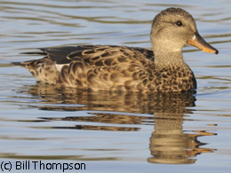

how do we obtain species-level information from harvest?

We combine Parts information with the estimates of harvest from the Diary Survey to get estimates of how many birds of each species were harvested.For example, say the estimated duck harvest (from the Diary Survey) in state X was 200,000 birds, and 35% of the wings from that state in the Parts Survey were mallards. Then estimated mallard harvest in state X is 70,000 birds (35% of 200,000). We can also identify the sex of a duck from its wing, and whether it was a young-of-the-year bird or an adult. The ratio of young-of-the-year birds to adults gives a good measure of the production of each species compared to previous years. That, in turn, helps biologists keep track of how waterfowl populations are faring. The USFWS also measures annual production of dove, woodcock, and band-tailed pigeons with Parts Collection Surveys.

Duck wing identification can be a handy skill when you're having a good day in the duck blind, since you're only allowed to shoot one or two of some species. Male ducks are usually (but not always) easy to identify, but young-of-the-year females of several species are pretty drab "brown ducks" and look similar. For example, what is the duck on the right?

What about the one on the left? Do you have to worry about the next bird you shoot if you have already bagged one of these?